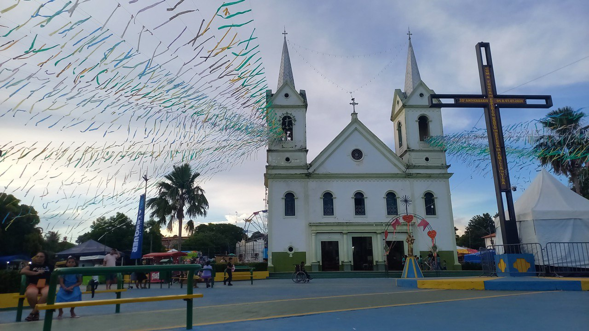
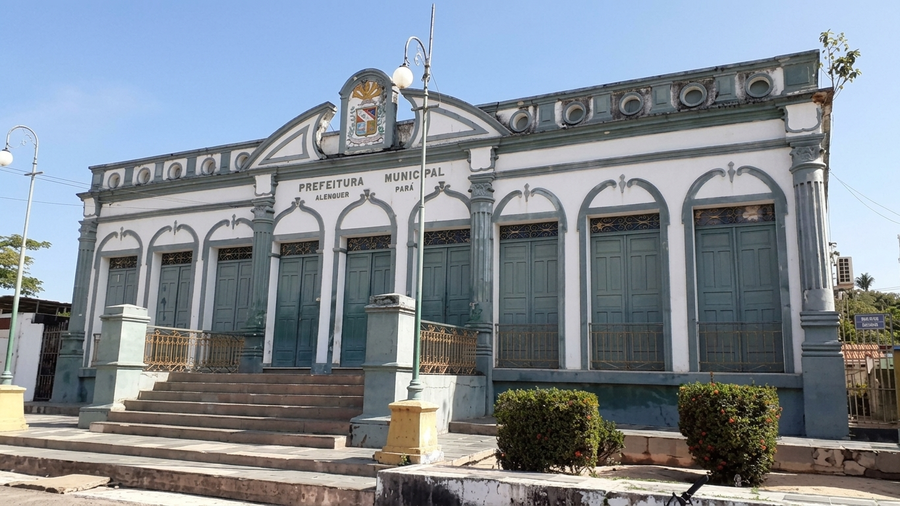
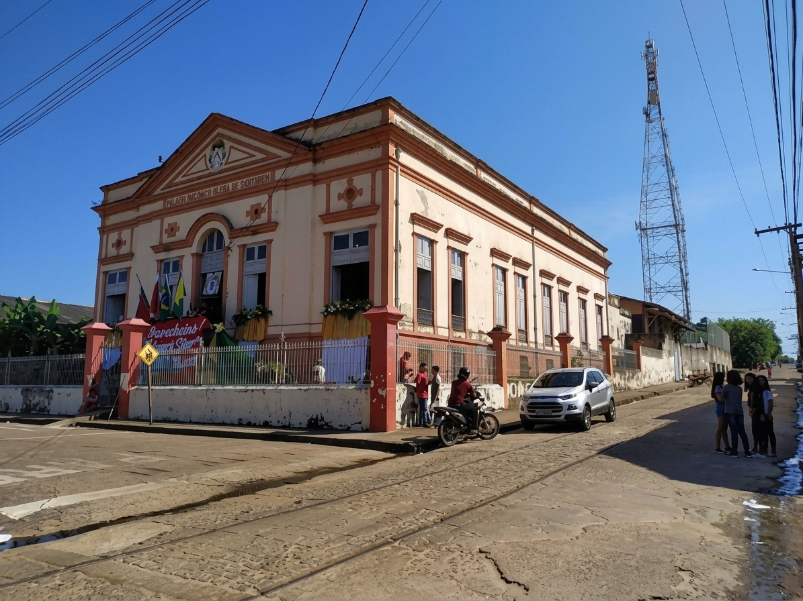
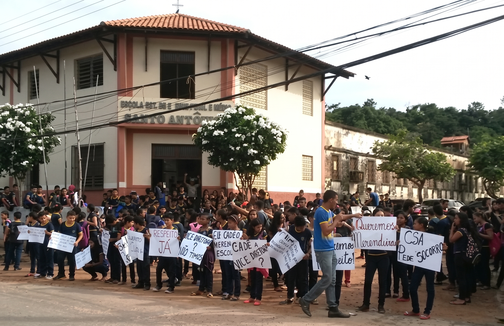
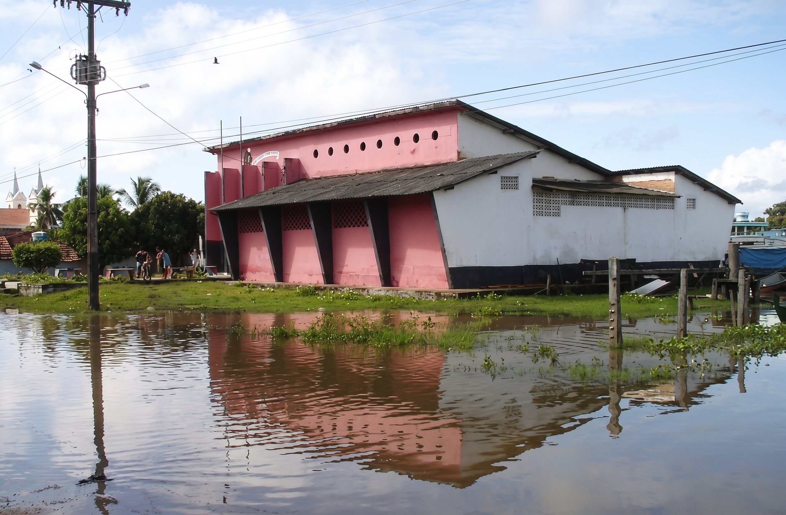
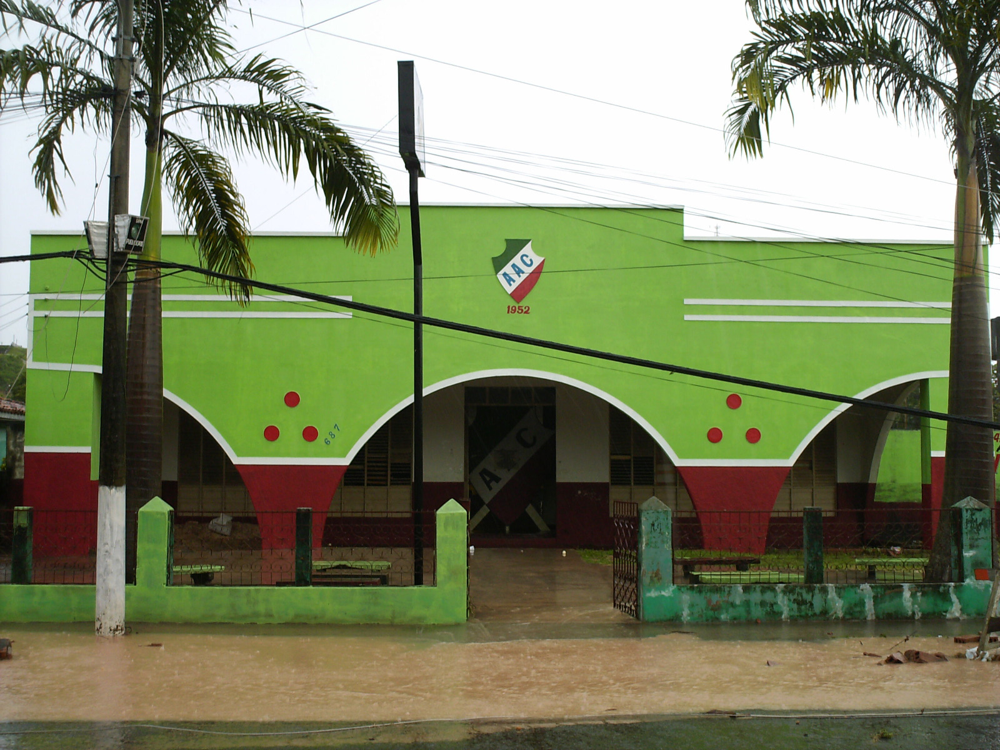

Patrimônio Histórico
Edificações que contam, com suas fachadas e histórias, a trajetória de Alenquer ao longo dos séculos.

Igreja Matriz de Santo Antônio
Templo dedicado ao padroeiro da cidade, centro da devoção católica e palco da tradicional festividade de Santo Antônio.
Ver detalhes
Prédio da Prefeitura Municipal
Sede administrativa do município, com arquitetura que testemunha diferentes fases da história política de Alenquer.
Ver detalhes
Escola Fulgêncio Simões
Instituição de ensino histórica, responsável por formar gerações de alenquerenses.
Ver detalhes
Escola Santo Antônio
Marco educacional da cidade, com valor arquitetônico e afetivo para a comunidade local.
Ver detalhes
Mercado Municipal
Inaugurado em 1924, é o polo central do comércio de produtos locais e um ponto de encontro histórico entre ribeirinhos e a população urbana.
Ver detalhes
Prédio do Internacional
Tradicional clube social e esportivo de Alenquer, guardião da memória festiva e palco de memoráveis eventos e carnavais da sociedade local.
Ver detalhes
Prédio do Aningal
Fundado em 1952, o tradicional clube tricolor é um marco histórico, esportivo e cultural, conhecido carinhosamente como "O Mais Querido de Alenquer".
Ver detalhes